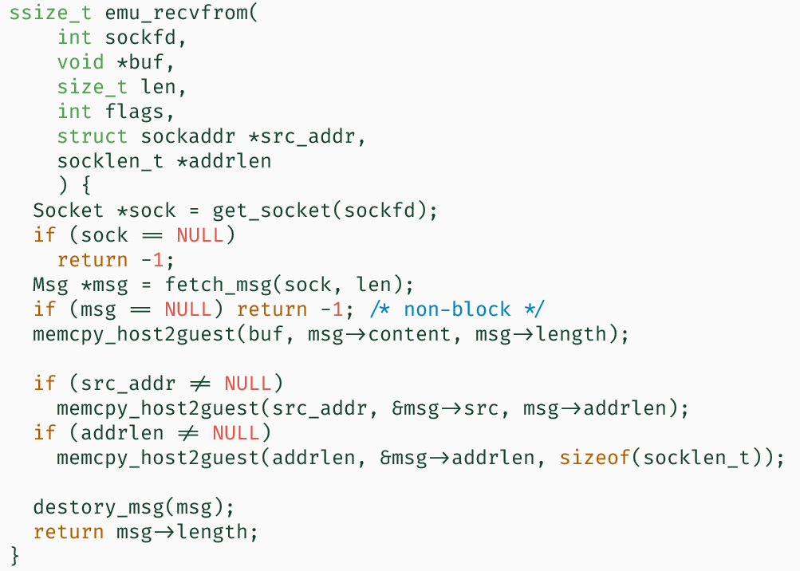

组会大纲
条评论做了什么：
用 willemt/raft，做了一个基于 UDP 通信的被测程序
对 tracer，实现了 emu_socket, emu_sendto, emu_recvfrom 等多个网络相关函数，完全模拟 SOCK_DGRAM
care:
1 | SYS_sendto |
1、对socket、connect、listen、send、recv等的拦截
- 拦截与模拟 OK
- tracer 与 tracee 之间的数据拷贝 yes
2、对数据报的管理 - 数据结构 OK
3、用 raft 写简易被测程序，研究其性质
4、手动操控模式，随机模式 —- 一条线走下去
5、稍作划分；还是强耦合
- tracer: 调度、控制
- state: 状态（结构体、序列和反序列化）
- guest: tracer 与 tracee 交互
- network: 网络行为的模拟

实际设计上，消息队列归属于节点状态了。相当于为每一个节点添加了一个 recvbuffer
不需要choose：
- 超时。通过调度的枚举即可。在 sleep 处打上点即可。
- 譬如，先 send_applyentries 再退出 sleep；或反之 sleep 后先判是否收到心跳，再 send_applyentries。
对于 willemt/raft，要求周期性 raft_periodic(msec_since_last_period)。
它做两件事，一是计算 time_elapsed，用于判定心跳超时和选举超时。二是 apply_log
几乎所有的信息都在 raft_server_private_t 里。也就是说只要把 raft_server_t *raft 的指针地址找到即可 —— 这比较简单。然后引用 raft_private.h 对结构体进行解析。
1 | typedef struct { |
代价：为这个结构体编写反序列化函数。
1 | void *addr = get_var_addr("raft"); |
running state (procfs) <==> recorded state (structure) <==> stored state (serialized)
目前的状况
运行起 raft 协议
逻辑比较琐碎。数据结构管理混乱，有一些 bug（结构体倒来倒去）
- 经典：用链表存的消息队列，serialize deserialize不停。每跑一次就得复制一份。一会儿用的是以前留下的，一会儿用的是从文件里读的。最终导致网络的行为有问题。
数据结构不连续，不适合映射到磁盘上。需调整。
- 数组，预分配